Regression comparison
Download resultsDataset
Training setting
Repulsion weight
Repulsion location
Compare repulsion locations
Method
Random points redraw every step and exclude all training inputs. Training and random use B points; combined uses 2B. Prediction axes match within each DE or BDKN row.
Functional repulsion
BetterWorse · relative rank within each column
DE
| Repulsion inputs | RMSE | NLL | Training seconds |
|---|---|---|---|
| Training | 0.11272 | -0.56999 | 22.21 |
| Random | 0.11300 | -0.55578 | 24.89 |
| Training + random | 0.11249 | -0.56252 | 23.76 |
BDKN
| Repulsion inputs | RMSE | NLL | Training seconds |
|---|---|---|---|
| Training | 0.11265 | -0.74542 | 22.34 |
| Random | 0.11261 | -0.74608 | 25.03 |
| Training + random | 0.11261 | -0.74595 | 23.90 |
Stage 1 · total loss and data fit
Repulsion loss R only
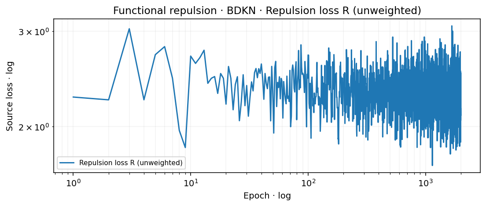
X: log · Y: log
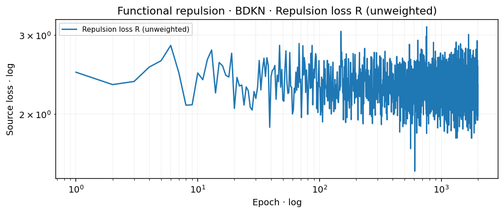
X: log · Y: log
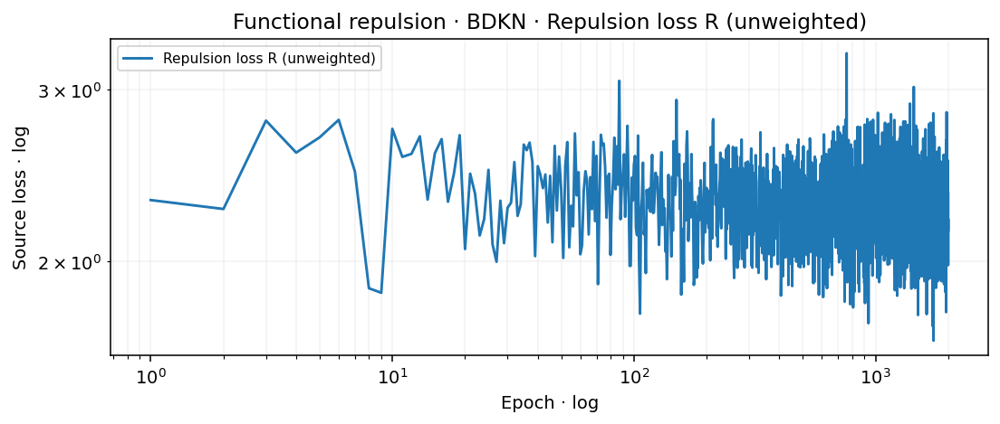
X: log · Y: log
Stage 2 · Bayesian marginal NLL
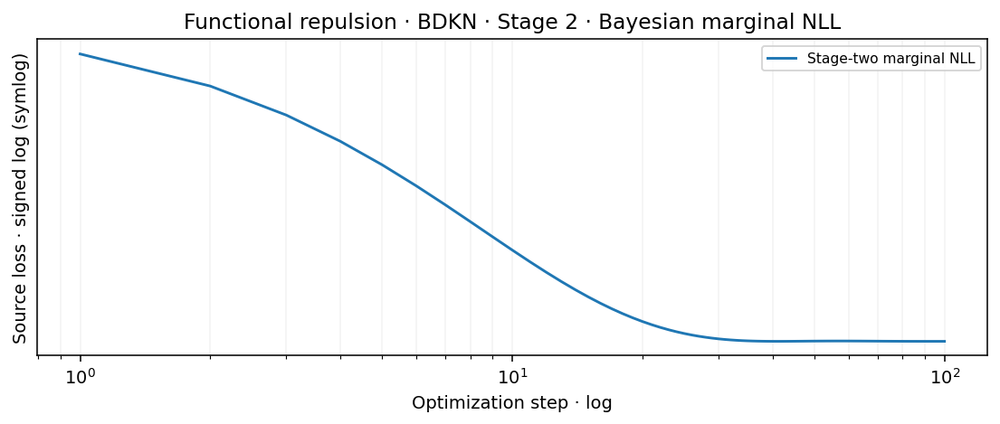
X: log · Y: signed log
X: log · Y: signed log
X: log · Y: signed log
First-order repulsion
BetterWorse · relative rank within each column
DE
| Repulsion inputs | RMSE | NLL | Training seconds |
|---|---|---|---|
| Training | 0.11264 | -0.59551 | 54.62 |
| Random | 0.11252 | -0.59134 | 51.38 |
| Training + random | 0.11261 | -0.59903 | 51.36 |
BDKN
| Repulsion inputs | RMSE | NLL | Training seconds |
|---|---|---|---|
| Training | 0.11253 | -0.74602 | 54.76 |
| Random | 0.11204 | -0.75084 | 51.52 |
| Training + random | 0.11217 | -0.74997 | 51.50 |
Stage 1 · total loss and data fit
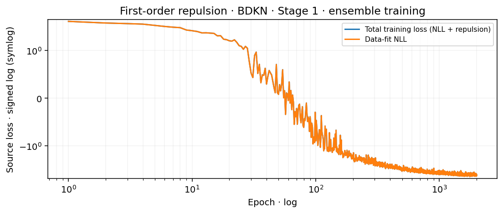
X: log · Y: signed log
X: log · Y: signed log
X: log · Y: signed log
Repulsion loss R only
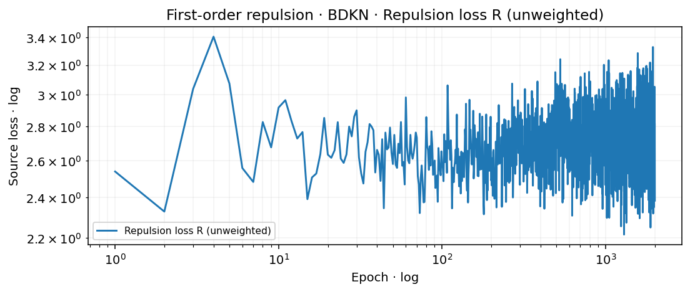
X: log · Y: log
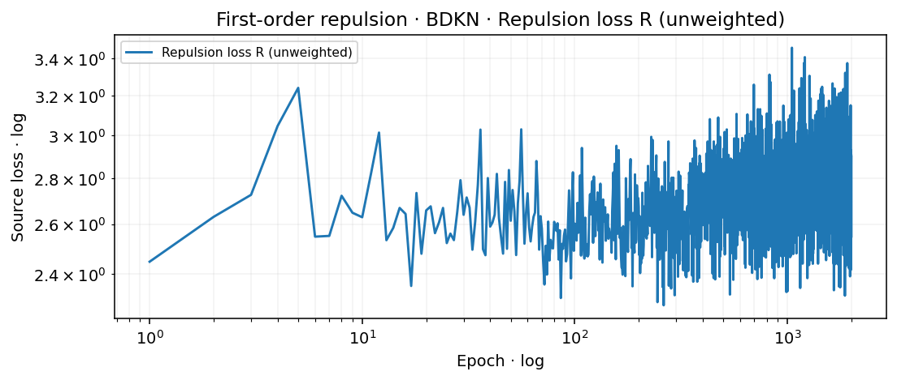
X: log · Y: log
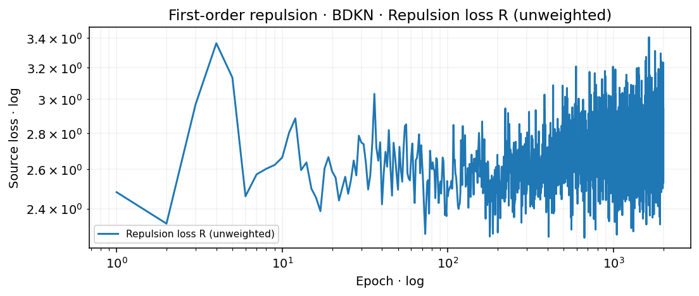
X: log · Y: log
Stage 2 · Bayesian marginal NLL
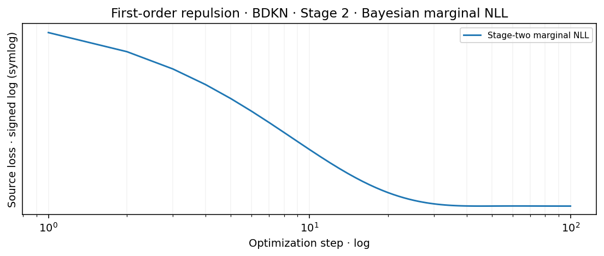
X: log · Y: signed log
X: log · Y: signed log
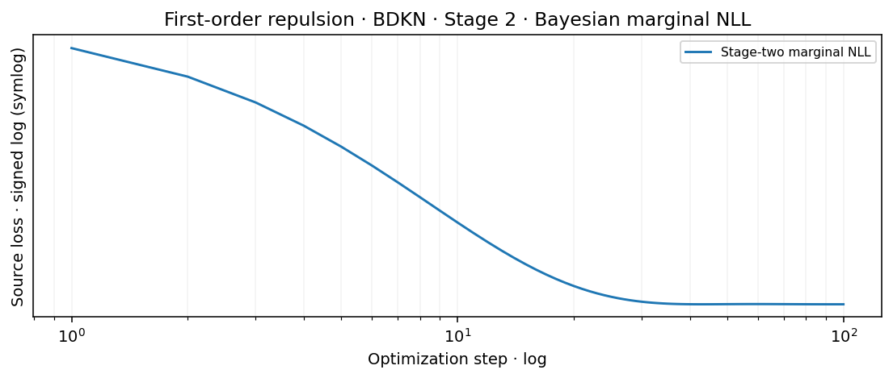
X: log · Y: signed log
Weight repulsion · location-independent
The loss compares network parameters directly. These same results apply to every location.
| Stage | RMSE | NLL | Training seconds |
|---|---|---|---|
| DE | 0.11299 | -0.52712 | 18.27 |
| BDKN | 0.11270 | -0.74084 | 18.41 |

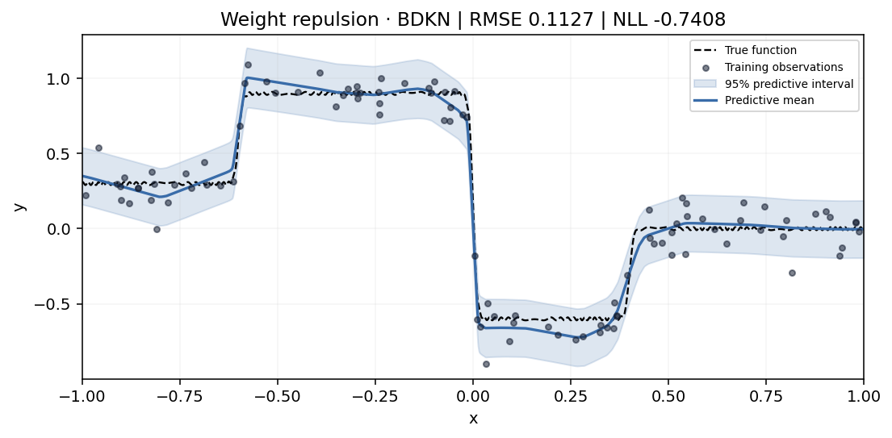